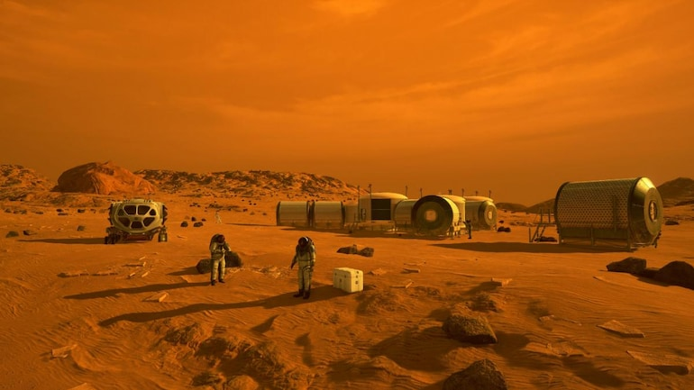

Human mission to Mars
Menù

Exploration of Mars
The exploration of Mars has been a goal of national space programs for decades. Conceptual work for missions
that would involve human explorers has been ongoing since the 1950s, with planned missions typically being
stated as taking place anywhere between 10 and 30 years from the time they are drafted.The list of crewed
Mars
mission plans shows the various mission proposals that have been put forth by multiple organizations and
space
agencies in this field of space exploration. Plans have varied from scientific expeditions, in which a small
group (between two and eight astronauts) would visit Mars for a period of a few weeks or year, to a
continuous
presence (e.g. through research stations, colonization or other continuous humanization).[citation needed]
Virtual visits to Mars, using haptic technologies, have also been proposed.[
In the 2010s, numerous US, European, and Asian agencies were developing proposals for human missions to
Mars.[citation needed] In fiction, Mars is a frequent target of exploration and settlement in books, graphic
novels, and films.
Mars Shuttles
There are shuttles that were on the Mars:
- Mars 3
- Viking 1 and Viking 2
- Mars Pathfinder and its Sojourner rover
- Spirit and Opportunity rovers
- Phoenix lander
- Curiosity rover
- InSight lander
- Beagle2
- Perseverance rover